Transforming Industries with AI & Semiconductor
Next-gen semiconductor and photonics testing driven by precision, performance, and innovation advancing drones, defense, and IT.
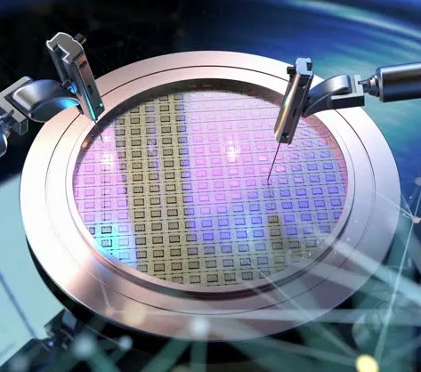

EXPERTISE

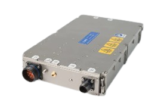
About
Our Story: Precision, Partnership, and Pioneering Breakthroughs.
Our Vision & Dedication: Headquartered in Singapore, we specialize in next-generation semiconductor equipment. Our mission is to accelerate innovation in the microelectronics industry by building systems that define the future.
We are a team of developers and scientists united by precision and disruptive breakthroughs across RF systems, power devices, and precise motion control platforms.
Our Foundational Values
Products & Services

THz/Photonics/Optics Solutions

Probe Station System & Accessories
GaN Technology
Lasers

Light Sources
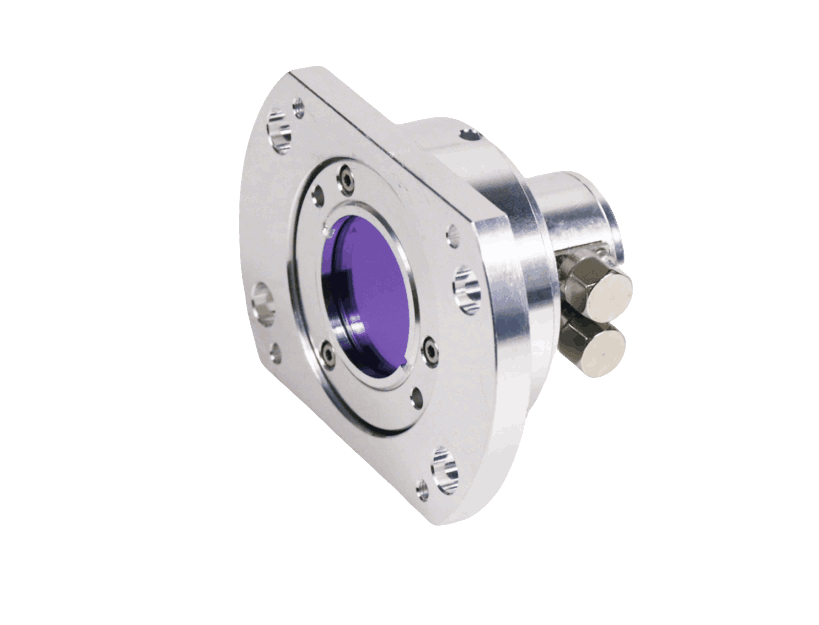
Detectors
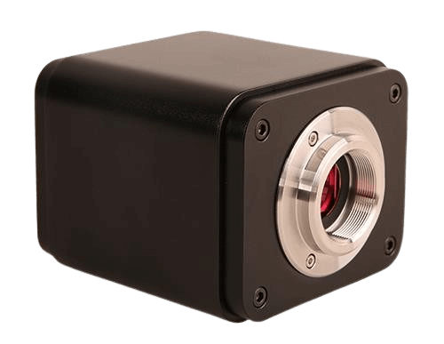
Imaging

Optics & Fiber

Opto-Mechanics

Optical Test & Metrology
GaN Technology
Module Development Steps
1. GaN Epitaxial (Epi) Design
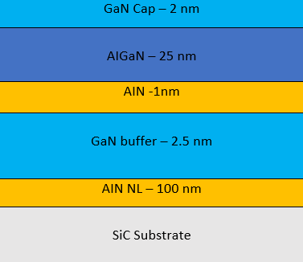
The process begins with the design of the GaN epitaxial structure engineered on a high-performance substrate such as Silicon Carbide (SiC). Multiple layers—including GaN cap, AlGaN barrier, GaN buffer, and AlN nucleation—are optimized to ensure superior thermal conductivity, high electron mobility, and reliability required for high-power RF applications.
2. Processed GaN Wafer

Once the epi structure is finalized, the wafer undergoes semiconductor processing steps like photolithography, etching, metallization, and passivation. This transforms the wafer into functional GaN device layers ready for IC fabrication. The processed wafer contains multiple devices distributed across the substrate.
3. Fabricated IC

The processed wafer is diced, and individual GaN die are fabricated into integrated circuits. These ICs incorporate RF amplifier structures designed to handle high power and wide-band operation. The layout includes matching networks and metallization structures required for optimal RF performance.
4. Packaged Chip

The fabricated ICs are then packaged into protective high-reliability RF packages. Packaging improves mechanical strength, thermal handling, and electrical interfacing. It enables the device to be integrated into RF modules and systems while maintaining low parasitics and stable high-frequency performance.
5. RF Power Module
The packaged GaN device is integrated into a fully assembled RF power amplifier module. The module delivers:
- 150 W continuous-wave output power
- Operating range: 700 MHz – 6 GHz
- Compact size: 32 × 20 × 5 cm
This module is ready for deployment in applications such as radar, satellite communication, defense electronics, 5G infrastructure, and research systems.
Probe Station System & Accessories
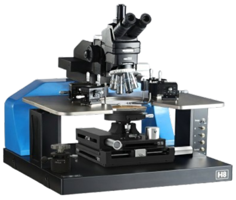
Probe Station System
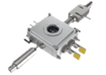
accessories
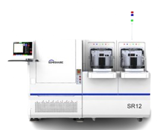
Test System
.jpg)
Test Services

Laser Repair System
Probe Station System
Probe Stations, Precision Positioning Systems, Chuck Options, Environmental Accessories & High-Accuracy Hardware Solutions.
Probe Station System & Accessories
A Series Full Automatic Probe Station
Product Overview
A series is SEMISHARE years carefully developed a production automatic high and low temperature probe, the probe station has high test precision and super fast test speed, with automatic up-down material, automatic wafer alignment, automatic wafer center, automatic test diesize, etc, has the identification function of wafer ID at the same time, can be a single point test can also be continuous testing, test software feature-rich, heavily for the enterprise to gain test speed, greatly improving the productivity and efficiency.
Basic Information
Application direction
Wafer testing of various kinds of devices Wafer and other Wafer performed RF testing and other characteristics analysis of I-V C-V optical signal RF 1/ F noise, etc.
Technical characteristics
A8 Full Automatic Prober
High precision and test speed, greatly improving test efficiency
Micron-scale fully closed-loop motion control
High voltage and high current test application
Bernoulli arm support sheet
Small size, light weight, smaller footprint
24X7 hours on-chip detection
A12 Full Automatic Prober
Super high test precision and test speed, greatly improve productivity benefits
Fully automated system running, fast safe and reliable test
Support single point testing and continuous testing
Integrated control system, fast access to instrument testing
XY maximum speed (screw structure): 250mm/s; XY maximum speed (linear motor): 500mm/s
Index time (screw structure): 280ms(10mm Die size, 200μm separation height); Index time (linear motor): 200ms(5mm Die size, 300μm separation height)
Rich software automation test, precise mechanical precision calibration
Automatic wafer thickness measurement and ID reading card can be upgraded
Leading internal anti - shock system device, more stable operation
X Series Semi-Automatic Probe Station

Product Overview
X series is an integrated and highly efficient semi-automatic wafer probe platform that is specialized in testing the performance of various advanced chips. It integrates various functions such as electric light wave and microwave, etc. It has the highest temperature width and test accuracy in the industry at present, and can match various test application environments, providing reliability wafer testing within -60 ~300 wide temperature range.
Basic Information
Application direction
Equipment professional deal with 12 "8" 6 "wafer Si/GaN/SiC and other kinds of devices of advanced chip performance test, can be equipped with corresponding instruments and meters, for the I - V C - V light RF signal character such as 1 / f noise analysis, feature-rich devices, scalable high-power wafer test RF test automatic test, and can load temperature control system, satisfy the customer in the high and low temperature environment of all kinds of wafer device performance test requirements.
Technical characteristics
The industry's most efficient CHUCK system, test efficiency increased by more than 40%
The industry's most efficient CHUCK test system running speed >70mm/s, motion precision 1 m, while moving the translocation time index time 500ms, excellent system operating parameters have reached the highest level of the industry, ultra-high test accuracy and efficiency to meet all kinds of wafers and devices of high repeatability and stability test, compared with other probe brands in the industry, the test efficiency is effectively increased by more than 40%. -60 ~300 is the highest temperature wide area in the industry, with temperature control accuracy and stability better than 0.08, providing reliability wafer testing in high and low temperature environments. The compact structure design of four-dimensional motion with low center of gravity ensures the motion speed of 70mm/s while maintaining the stability of motion acceleration and deceleration.
Industry leading 3 times imaging technology
Built-in SEMISHARE patent more than three zoom microscope view three times with JiaoGuang road system, 120 x 2000 x variable times optical amplifier, size view shows at the same time, more can make the point needle and convenient operation, double Basler 2 million pixels high speed CCD 23 "display and Mituyoyo high precision high resolution camera, precision positioning of high stability high definition, image output and high precision measurement and dynamic monitoring.
Auxiliary CHUCK module silicon wafer safe upper and lower
The unique Chuck XY axis design in the industry has changed the common phenomenon that the probe system of other brands in the market is affected by the resistance of laminated plates in different directions and sizes, leading to the decline of motion stability.This ensures that the XY axis is not affected by the laminate when moving, making the motion precision and stability higher. Compared with other brands in the industry, the probe table cavity of SEMISHARE can be opened once and pulled out the entire Chuck mechanism to load and load silicon wafers at a speed of 370mm with a long stroke. The manual feeding of the Wafer is more convenient and faster.Meanwhile, the Chuck's rotation Angle range is larger, which requires lower demand for manual laying wafer, and the operation is more flexible and convenient.
Design of O-type needle seat platform
The probe testing system adopts the O-type needle seat platform design, which makes the most efficient use of the space of the needle seat, up to 12 needle seats can be placed at the same time. Compared with other probe brands in the market, the number of the needle seat is increased by 50%, effectively realizing more efficient and rapid testing.
Air film shock absorption system
The industry's unique internal integration of high-performance air film shock absorption system and the dual design of the external isolation barrier, effectively avoid the vibration caused by the operator's touch;In addition, a long-aging casting is used as the substrate to suppress the vibration in the process of motion at the fastest speed of 1S in the industry to ensure the stable operation of the equipment, and to ensure that the screen does not shake when the image is enlarged at 2000X;At the same time, the high-precision control valve ensures that the height error of the moving part of the platform is 0.1mm, effectively realizing the test ability of fast DIE to die, ensuring that the whole system can still maintain a stable running state when moving at a high speed, and greatly improving the test efficiency.
Anti-interference shielding system
Anti interference EMI/Spectral noise/external light closed shielding cavity, cavity with the surface of conductive oxide and nickel plating process, to ensure the conduction state between the parts so as to achieve the shielding effect, reduce the system noise, blocking interference effectively, and provide low leakage current protection, provides the best test environment for the weak electric signal test;At the same time, the closed chamber in the low temperature environment to avoid the test sample condensation, to ensure the wafer and device under the high and low temperature environment fast and safe reliability test.
Independent research and development of software integration system, more compatibility
Support semi-automatic control (manual test or automatic test). Automatic Wafer calibration automatic Wafer mapping automatic die size measurement automatic align automatic test data can be accessed remotely. Automatic calibration of RF probe module with one key, automatic needle clearing function. One-key adaptive four-axis Chuck precision calibration, supporting micron pad point measurement. Single point or continuous testing can be supported. Strong data storage capacity and data processing capacity. The bin value can be divided to determine the device NG. Multi-system integration to upgrade the operating system application system and device test system independently. Intuitive and simple operation design, quick and easy operation, effective saving operation training time.
Flexible optional configuration and extension
Convenient instrument access and support system automatic expansion and upgrade, temperature control system loading;There are also a variety of test modules available. According to the test module, it can be used together with a variety of positioner fixtures, needle CARDS and probe tables, such as six-axis positioner RF cables.Many system operating parameters and features reach the highest level of the industry, can meet your different test needs, but also an ideal choice for more industry customers a semi-automatic probe table equipment.
V Series New Generation High Performance Probe Station

Product Overview
V series not only inherits the advantages of the X series on functions and operating performance, but also supports installation of loader and provides fully automatic testing function; It's about half the dimension and weight of the X series to decrease the floor area sharply; Ultra-fast speed, high precision and batch testing are all available.
Basic Information
Technical characteristics
Primary Options
Supports installation of loader and provides fully automatic testing function
High EMI shielding upper protective cover / standard upper protective cover
Single/dual-arm robotic automatic loading system
Chuck: room/high/low temperature
Virtual tabletop rapid lifting function, manual quick release of test samples
Chuck X/Y axis manually controllable movement
Computer interface: RS232, TCP/IP, GPIB
Designed with Full-coverage guard™ for extrem low system current leakage levels
CGX High-Low Temperature Vacuum Semi-automatic Probe Station

Product Overview
SEMISHARE CGX semi-automatic vacuum high-low temperature probe station is designed for research and specific production applications. It enables rapid and high-precision testing on single wafers in a vacuum environment, temperature range:77K-450K(liquid nitrogen), 10K-450K(liquid helium).
Basic Information
Application direction
Based on sample classification: Wafer Testing，LED Testing，Power Device Testing，MEMS Testing，PCB Testing ，LiquidDisplay Panel Testing，Solar Cell Panel Testing，Surface Resistivity Testing. Based on application classification: RF Testing，High-Temperature Environment Testing，Low Current (100fA Level) Testing，I-V/C-V/P-IV Testing，High Voltage, High Current Testing，Magnetic Field Environment Testing，Radiation Environment Testing.
Technical characteristics
Independent research and development of software integration system, more compatibility
Supports semi-automatic control (manual or automatic testing)
Automatic wafer calibration, wafer mapping, die size measurement, alignment, and remote access to test data
One-click automatic calibration of RF probe module, with automatic probe cleaning function
One-click adaptive four-axis Chuck precision calibration, supporting micrometer-level pad point testing
Supports single-point or continuous testing
Strong data storage and processing capabilities
Ability to divide test results into BIN values and identify NG devices
Multiple system integration capabilities, allowing independent upgrades of operating systems, application systems, and device testing systems
Air film shock absorption system
The industry's unique internal integration of high-performance air film shock absorption system and the dual design of the external isolation barrier, effectively avoid the vibration caused by the operator's touch...
Industry leading 3 times imaging technology
12:1 fast and precise motorized zoom microscope, zoom range 0.6~7.2X, image resolution 3.05μm, total magnification range 33X~396X.
The industry's most efficient CHUCK system, test efficiency significantly improved
High efficient CHUCK test system，running speed≥40mm/s, motion precision≤±1μm...
High And Low Temperature Vacuum Probe Station
Product Overview
CG launched series is the first domestic company independent research and development of high and low temperature vacuum prober, in ultra high vacuum, automatic control, laser simulation...
Basic Information
Application direction
Chip test LD/LED/PD test Optical fiber spectral characteristics Test MATERIAL/device IV/CV characteristics Test Hall test electromagnetic transport characteristics high frequency characteristics test, etc.
Technical characteristics
Vacuum Chamber
Vacuum chamber adopts double shielding cavity and external cavity structure, to provide the sample test of extreme pressure...
Probe arm XYZ regulating mechanism
The XYZ adjusting mechanism of the probe arm adopts the structure of self-locking lead screw and cross roller guide rail...
Microscope regulating mechanism
By adjusting the telescopic height of the support frame and the adjustable seat of the microscope...
Refrigerant flow regulation system
The refrigerant regulating system is composed of the pressure control valve of compressed nitrogen in the duwa tank...
Refrigerant Coaxial Loop
Refrigerant coaxial circuit of the refrigerant from the middle line into the sample set...
Shockproof Platform
Shockproof system USES the import of South Korea's big companies air spring type brace shockproof platform...
High And Low Temperature Analysis Probe Station

Product Overview
The HL series high-low temperature probe station covers a temperature range from -60℃ to 300℃ and allows rapid temperature change between the minimum and maximum values. The temperature control accuracy reaches ±0.1℃.
Application direction
Device analysis and parametric testing under extreme high and low temperature environments.
Technical characteristics
Precision, stability and repeatability
Advanced temperature control system with fast transition time
Wide application for I-V, C-V, RF, optical and MEMS testing
Suitable for wafer-level and chip-level applications
FA Series Failure Analysis Probe Station

Product Overview
FA series failure analysis probe station is designed for defect localization and device-level failure evaluation. Supports optical, laser, and electrical characteristic diagnosis.
Application direction
Failure location, signal tracking, reverse engineering, short/open-circuit evaluation
Technical characteristics
Supports IR, OBIRCH, TIVA, LADA, XRAY, emission microscope and more
Excellent vibration isolation structure
Ultra-precision micro-positioning system
H Series Integrated Manual Probe Station
Product Overview
H series integrated manual probe station offers compact design, flexible test operation, and excellent performance for research and education labs.
Application direction
Basic device electrical performance test, chip-level testing, R&D and university applications
Technical characteristics
Compact footprint, fully integrated architecture
High precision XY stage, smooth motion
Optional SMU connection modules and microscope systems
E Series 150mm Economical Manual Probe Station

Product Overview
E series 150mm economical probe station is a budget-friendly platform designed for flexible semiconductor testing for early verification and teaching laboratories.
Application direction
Education, sample evaluation, parametric IV/CV testing
Technical characteristics
Cost-effective design
Stable mechanical framework
Compatible with mainstream microscopes and manipulators
M Series Basics Manual Probe Station

Product Overview
M series provides basic manual probing capability for fundamental research and electronic testing experiments.
Application direction
Entry-level semiconductor testing, university teaching, prototype verification
Technical characteristics
Smooth operation, stable structure
Supports various probe arms and chuck configurations
TEG Panel Laser Probe Station

Product Overview
TEG panel laser probe station is built for panel-level semiconductor and laser-based optical testing, supporting large-size substrates.
Application direction
Laser TEG testing, display panels, photovoltaic testing, optical signal analysis
Technical characteristics
Precision laser positioning
Compatible with large panel sizes
Low noise and high measurement accuracy
Probe Station Accessories
Probe Stations, Precision Positioning Systems, Chuck Options, Environmental Accessories & High-Accuracy Hardware Solutions.
Accessories & Supporting Hardware
Temperature Chuck
Normal temperature chuck

Room temperature porous chuck
Specification: Coaxial/Triaxial/RF/High Voltage
Size: 4, 6, 8, 12 inches
Features:
Multi-area independent adsorption/three-stage vacuum adsorption
Modular system, customized to adapt to personalized testing requirements
Compatible with all major production probes and all major analytical probes
Offers complete hardware and software integration
High and low temperature chuck

High and low temperature three-axis groove chuck
Specification: -50/60℃ to 200℃
Size: 8, 12 inches
Features:
Without cooling machine, the temperature can be as low as -10℃
Air only - no liquids or Peltier elements
Modular system, customized to adapt to personalized testing requirements
No separate purge air source required
Compatible with all major production probes and all major analytical probes
Offers complete hardware and software integration
Micropositioner
SS-700e-m
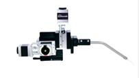
Motorised Micropositioner
Specification: XYZ stroke 15mm; movement resolution 0.1μm; repeat positioning accuracy ±1μm; maximum movement speed 10mm/s.
Size: 146L x 125W x 140H mm; Weight: 1.97kg
Features:
Quickly adjust the position manually
Compatible with a variety of manual probe fixtures
Conveniently expandable to support up to 4 motorised needle holders at the same time
SS-125-M
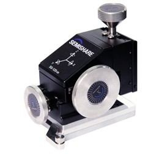
Submicron circuit/RF test micropositioner
Specification: X-Y-Z travel range: 14 x 14 x 14 mm; linear motion; screw precision: 125 threads/inch; movement accuracy: < 1 micron
Size: 110mmL×51mmW×100mmH，1.1kg
Features:
The axis movement mode shifts from differential head lifting to screw drive, preventing post-collision jolts
Shorter tooth spacing enables more precise adjustments
Differently sized handles allow for easy distinction during operation
Probe Holder
High voltage probe holder HV-T-3KV

Specification: Maximum test voltage: 3KV; Leakage flow (tip diameter 20um): 5pA/3000KV; Working temperature: -55℃~300℃; Interface: HV male (female)
Size: 152*99*42mm
Features:
Ultra-low leakage
Easy to use and simple probe replacement
Large height adjustable range
Probe
ST Series Hard needle

Specification: ST
Size: Hard needle tungsten material
Features: ST series hard needles are made from 0.020 inch (0.51mm) diameter tungsten needles after electrochemically processing and they come with a length of 1.5inch (38.1mm).They are mostly used for the vast majority of chip electrode spot tests and circuit spot tests. ST series hard needles can be used to scrape or pierce the passive layer on the chip surface. They can be optionally plated with nickel on the surface. If you choose nickel plating, add "NP" after the model number.
Radiofrequency Probe

Specification: DC power supply DC-40GHz to -145GHz optional
Tip configuration: GS/SG/GSG/GSSG/GSGSG, etc.
Tip distance: Different tip types are available in a wide range (such as GSG: 25~2450 μm)
Size: Regular
Features: The voltage waveform in the circuit is converted into a specific voltage value for accurate measurement and analysis.
Adapter
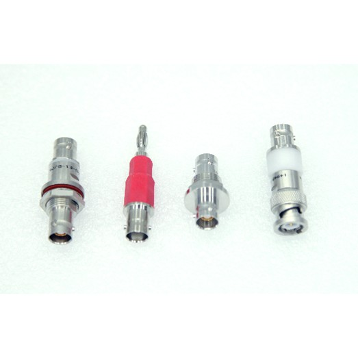
Specification: Maximum current: 10A; Maximum frequency: 500 MHZ; Minimum leakage current: 100fA; Maximum voltage: 1000V
Size: Regular
Air-floating automatic balance anti-vibration table

Specification: Size: 600*900*600mm
Features: The pneumatic support frame is designed and manufactured with a special two-chamber system design to ensure that the natural vibration frequency is kept low, excellent vibration isolation in both vertical and horizontal directions, and excellent damping with leveling valve design provides automatic leveling.
Test Systems
Probe Stations, Precision Positioning Systems, Chuck Options, Environmental Accessories & High-Accuracy Hardware Solutions.
Test Systems
SR Series Fully Automatic Four-Probe Square Resistance Test System

Product Overview
The four-probe square resistance test system is a high-precision test device with advantages such as good reliability and simple operation. It is of great significance for the design, production, and quality control of microelectronic devices.
Basic Information
Application direction
Semiconductor materials, solar cell materials (silicon, polysilicon, silicon carbide, etc.), new materials, functional materials (carbon nanotubes, DLC, graphene, silver nanowires, etc.), conductive films (metal, ITO, etc.), silicon-related films (LTPS, etc.), diffusion layer testing, and others (*For more details, please contact us).
Technical characteristics
SR Series Fully Automatic Four-Probe Square Resistance Test System
● SR8 is compatible with 6/8-inch wafers, and SR12 is compatible with 8/12-inch wafers.
● Designed according to the fully automatic test performance of the production line, ensuring high testing efficiency.
● Single/double probe configuration, suitable for different application scenarios.
● Optional SECS/GEM factory communication protocol.
● Compliant with ASTM and JIS industry standards.
Hall Effect System

Product Overview
Hall Effect System is integrated Keithley2400/2600 series precision source and Semishare Polaris high and low temperature platform, using van der pol rule design, applied to the high precision of measuring carrier type of semiconductor material type (P/N) concentration of carrier mobility parameters such as resistivity hall coefficient, can be applied to Si SiGe SiC GaAs InGaAs InP semiconductor materials such as GaN.
Basic Information
Technical characteristics
Product Feature
The industry-leading Keithley testing platform.
Ultra high precision source table, achieve accurate measurement.
Modular design, stable performance and simple maintenance.
Rich software functions, convenient and flexible operation.
Visual interface, data analysis is clear.
High and low temperature variable temperature environment, effective implementation of reliability testing.
Test Service
Semicom Professional Testing Services (PTS): Delivering efficient, cost-effective, and application-driven semiconductor testing solutions.
Test Service
Semicom Professional Testing Services (PTS)
Overview
To create more value for users through flexible, reliable, and fast semiconductor testing services.
Founding Purpose
To facilitate design validation, providing convenient testing and shortening development time.
To reduce testing costs by eliminating upfront equipment purchase requirements—users simply send PTS testing requests.
To understand emerging market applications and promote innovation in semiconductor testing product development.
Laser & Repair System
Probe Stations, Precision Positioning Systems, Chuck Options, Environmental Accessories & High-Accuracy Hardware Solutions.
Laser Repair Systems
Mask LCVD Repair LD14

Product Overview
The mask LCVD repair equipment mainly uses laser-induced chemical vapor deposition (LCVD) technology to repair defects on the masks. The SEMISHARE LD14 series offers a wide range of deposition thickness and high repair precision. The sub-micron level laser precision can effectively deal with masks with extremely small pitches. With sub-micron laser accuracy, it effectively addresses defects on masks with extremely small pitches, providing high-precision, low-cost repair solutions for high-value mask defects, thus significantly reducing production and operational costs for enterprises.
Basic Information
Application direction
It can be used to fill in missing parts on a mask or repair patterns. This technique is often employed to fix issues like open circuits and short circuits.
Technical characteristics
Mask LCVD Repair LD14
For products with different thicknesses and large spans, there is no need for manual adjustments when changing products; the equipment can automatically adapt to the height adjustment of the deposition head.
Exhaust gas recovery treatment utilizes high-temperature filters with up to dozens of layers, effectively capturing harmful components in the decomposed exhaust gas, which is then cooled and directed into the factory’s exhaust system.
Customized products can be provided according to customer needs.
Mask Cut Repair L14

Product Overview
The L14 series mask laser cutting and repair equipment is mainly used to repair defects that occur during the use of photomasks. At the core of the device is SEMISHARE's advanced machine vision system, which provides a high-precision, cost-effective repair solution for high-value photomask defects that helps companies lower production and operational costs.
Basic Information
Application direction
Application scenarios that require precise cutting or removal of specific material layers.
Technical characteristics
Mask Cut Repair L14
It can handle the repair of various materials including chromium, silicon, silicon nitride, quartz, EUV materials, foreign particles and stubborn unknown particles.
It can precisely remove or repair defective areas without affecting other parts of the mask.
It can provide customized products according to customer needs.
FlexScan Panel Laser Spot Repair System

Product Overview
FlexScan series is designed for display of process design panel window abnormal defects and faults of a laser panel window repair equipment equipment SEMISHARE leading machine vision system as the core, provide high precision for LCD \ semi-finished goods display defect repair and low cost solution, greatly increase the degree of the enterprise technological process yield and economic benefits.
Basic Information
Application direction
Tft-lcd panel bright spot repair, OLED panel bright spot repair.
Technical characteristics
Product Feature
Laser system visual operation, greatly improve the efficiency of repair.
Repair shape can be edited, can be multi - station design.
Linear motor structure,1um laser precision, high speed mute.
Leading internal anti - shock system device, more stable operation.
High power optical image recognition, automatic calibration focus.
Local darkening can be achieved.
Automatic AOI positioning, automatic upper and lower slice.
Rich software testing function, high precision calibration of mechanical system.
LCD/OLED Panel Laser Repair System

Product Overview
LCD series laser repair equipment is a kind of repair equipment to repair the defects and defects in the production process of display screen, so as to improve the yield of the process.With the leading machine vision system of SEMISHARE as the core, the equipment can provide high-precision and low-cost solutions for the defects of LCD finished products and semi-finished products, so as to improve the business efficiency to a greater extent.
Basic Information
Application direction
OLED/LCD panel within 20 "55" and 70 "highlights and abnormal repair.
Technical characteristics
Product Feature
High power optical image recognition, automatic calibration focus.
Laser system visual operation, greatly improve the efficiency of repair.
Linear motor structure,1um laser precision, high speed mute.
Automatic AOI positioning, automatic upper and lower slice.
Rich software testing function, high precision calibration of mechanical system.
Repair shape can be edited, can be multi - station design.
Leading internal anti - shock system device, more stable operation.
Electrical shielding system, shielding light and electromagnetic interference.
LCVD Panel Laser Repair System
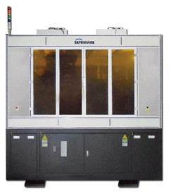
Product Overview
LCVD laser repair equipment is mainly an automatic repair equipment designed for the poor process and defects of LCD display. With the leading machine vision system of SEMISHARE as the core, LCVD laser repair equipment can provide high-precision repair and low-cost solutions for the defects of LCD finished products and semi-finished products, so as to improve the business efficiency of enterprises to a greater extent.
Basic Information
Application direction
TFT-LCD and OLED Array Panel circuit open and short circuit repair,Mask defect repair.
Technical characteristics
Product Feature
High power optical image recognition, automatic calibration focus.
Laser system visual operation, greatly improve the efficiency of repair.
Linear motor structure,1um laser precision, high speed mute.
Electrical shielding system, shielding light and electromagnetic interference.
Rich software testing function, high precision calibration of mechanical system.
Minimum machining accuracy up to 1*1um.
Leading internal anti - shock system device, more stable operation.
Can be upgraded for sample testing up to 120 inches.
Trusted by Leading Institutes

- Indian Space Research Organization (ISRO)
- Defence Research and Development Organization (DRDO)
- Indian Institute of Technology (IITs)
- Indian Institute of Science (IISc)
- MIL - Hindustan Aeronautics Limited (HAL)
- Bharat Electronics Limited (BEL)
- Electronics Corporation of India Limited (ECIL)
- Bharat Heavy Electricals Limited (BHEL)
- Gallium Arsenide Enabling Technology Centre (GAETEC)
- National Physical Laboratory (NPL)
- Semiconductor Complex Limited (SCL)
- CSIR-CEERI